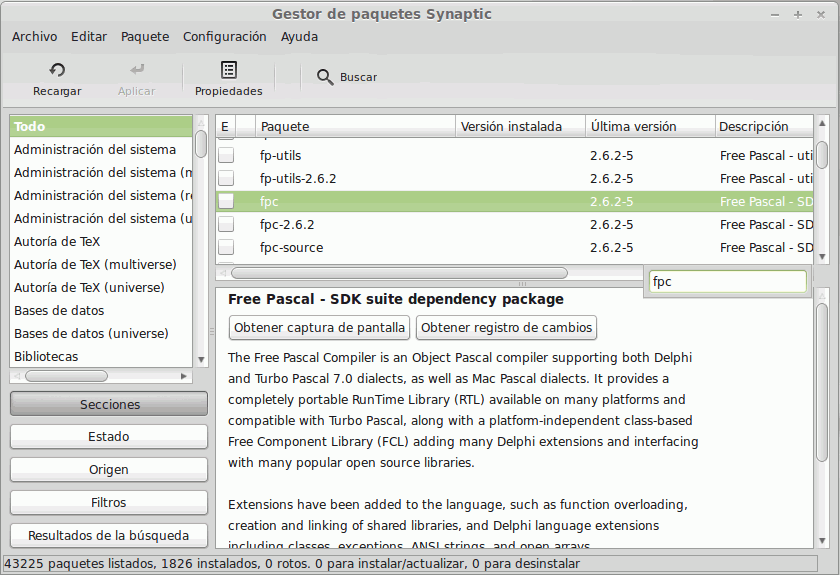
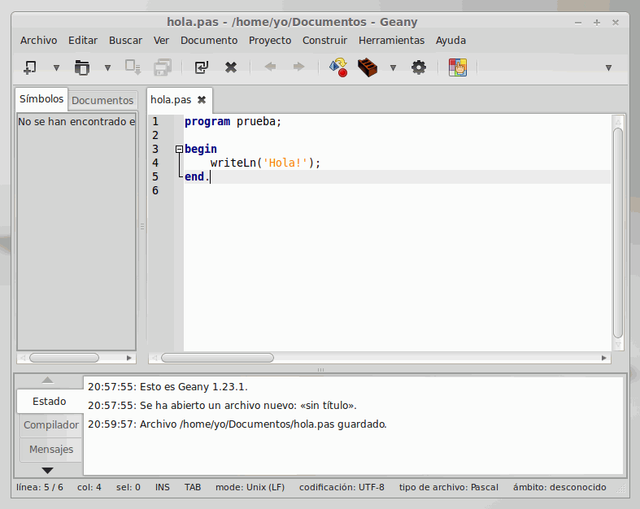
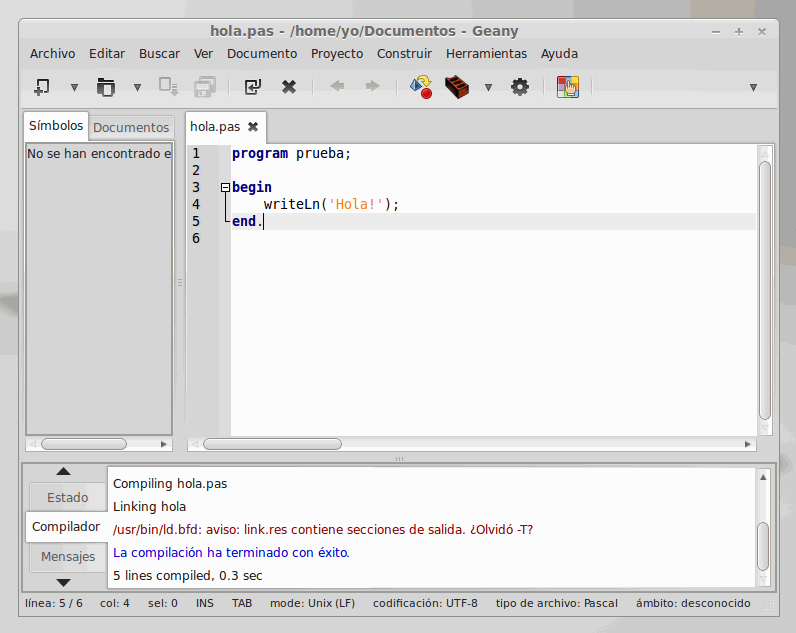

En casi cualquier distribución de Linux tendremos un gestor de paquetes que nos permita instalar nuevos programas. Uno de los más habituales es Synaptic:
Es habitual que se nos pida que introduzcamos nuestra contraseña para ver si tenemos permisos para instalar nuevo software:
En la lista de paquetes disponibles, podemos teclear "fpc" para que se nos lleve hasta el compilador de Pascal:

Al hacer doble clic se nos mostrará la lista de paquetes adicionales que dependen de ése:
Y todos ellos quedarán seleccionados. Entonces deberemos pulsar el botón "Aplicar":
Se nos informará del tamaño de las descargas y de la cantidad de espacio que ocupará una vez instalado:
Y comenzará la descarga en sí:
Al cabo de un instante estará instalado:
Si no queremos tener que compilar "desde línea de comandos", puede interesar instalar un editor para programadores, como Geany:
Nuevamente se nos avisará de los demás paquetes que sean necesarios:
Y del espacio que va a ocupar:
Y en un instante estará listo:
A partir de ese momento, deberíamos tener disponible el menú "Programación", y dentro de él estará "Geany":
Que nos muestra una ventana dividida en 3 bloques:
El bloque más grande es nuestra ventana de edición, en la que escribiremos el programa:
En cuanto lo guardemos con un nombre terminado en ".pas", se realzará la sintaxis en colores, siguiendo las reglas de Pascal:

Y entonces ya podremos pulsar el botón "Compilar":
En el bloque inferior de nuestra ventana se nos informará de si la compilación ha sido correcta; en caso de que no fuera así, las líneas con errores aparecerían subrayadas en color rojo en la ventana principal:

Si la compilación ha sido correcta, ya podemos ejecutar nuestro programa, sin necesidad de salir de Geany:
Y el resultado se mostrará en una nueva ventana. Cuando termine la ejecución del programa, la ventana permanecerá abierta hasta que pulsemos Intro, para que podamos comprobar los resultados: